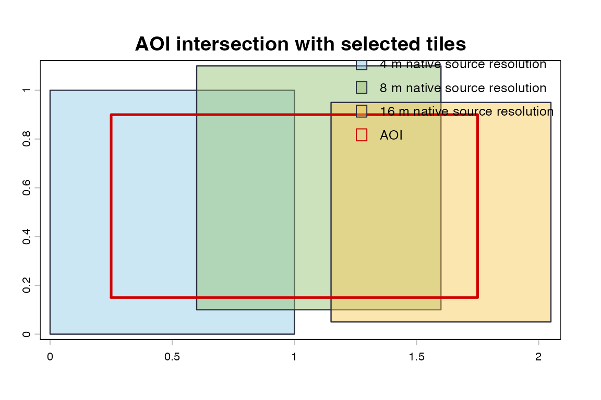

This page uses real NOAA BlueTopo source tiles when rendered for the public pkgdown site. This example uses actual NOAA BlueTopo source tiles downloaded from the public NOAA National Bathymetric Source bucket during the pkgdown build.
BlueTopo is not for navigation. No vertical-datum conversion is performed. Coverage is geometric tile-index coverage, not a statement about navigational fitness, data quality, or NOAA endorsement.
Selected Tiles
tiles <- bluertopo_tiles(
real_aoi,
resolution = "native",
coverage = "warn",
quiet = TRUE
)
bt_display_table(bt_tile_table(tiles, include_urls = TRUE))| tile_id | resolution_m | utm_zone | delivered_date | intersection_area_m2 | intersection_fraction | selection_rank | selection_reason | fallback | geotiff_url | rat_url |
|---|---|---|---|---|---|---|---|---|---|---|
| BH4SH55P | 4 | 17 | 2024-12-16 16:38:56 | 1119850 | 0.018 | 1 | native | FALSE | noaa-ocs-nationalbathymetry-pds.s3.amazonaws.com/BlueTopo/BH4SH55P/BlueTopo_BH4SH55P_20241212.tiff | noaa-ocs-nationalbathymetry-pds.s3.amazonaws.com/BlueTopo/BH4SH55P/BlueTopo_BH4SH55P_20241212.tiff.aux.xml |
| BH4SJ55P | 4 | 17 | 2024-10-07 15:42:50 | 2239700 | 0.036 | 2 | native | FALSE | noaa-ocs-nationalbathymetry-pds.s3.amazonaws.com/BlueTopo/BH4SJ55P/BlueTopo_BH4SJ55P_20241004.tiff | noaa-ocs-nationalbathymetry-pds.s3.amazonaws.com/BlueTopo/BH4SJ55P/BlueTopo_BH4SJ55P_20241004.tiff.aux.xml |
| BF2H62K7 | 8 | 17 | 2024-12-16 16:37:25 | 6718416 | 0.053 | 3 | native | FALSE | noaa-ocs-nationalbathymetry-pds.s3.amazonaws.com/BlueTopo/BF2H62K7/BlueTopo_BF2H62K7_20241212.tiff | noaa-ocs-nationalbathymetry-pds.s3.amazonaws.com/BlueTopo/BF2H62K7/BlueTopo_BF2H62K7_20241212.tiff.aux.xml |
Coverage Diagnostics
coverage <- attr(tiles, "coverage")
bt_display_table(bt_coverage_table(coverage))| published_coverage_fraction | selected_coverage_fraction | selected_aoi_fraction | target_coverage | target_met | coverage_type |
|---|---|---|---|---|---|
| 1 | 1 | 1 | 1 | TRUE | geometric tile-index coverage |
AOI And Selected Footprints
bt_plot_tiles(tiles, real_aoi, main = "AOI intersection with NOAA BlueTopo tiles")
Actual NOAA BlueTopo source tiles: AOI outline over selected tile footprints colored by native resolution.
Coverage Fractions
coverage_values <- unlist(coverage[c(
"published_coverage_fraction",
"selected_coverage_fraction",
"selected_aoi_fraction",
"target_coverage"
)])
barplot(
coverage_values,
ylim = c(0, 1),
col = c("#8ecae6", "#90be6d", "#f9c74f", "#d00000"),
las = 2,
ylab = "fraction",
main = "Coverage diagnostics"
)
abline(h = coverage$target_coverage, col = "#d00000", lwd = 2, lty = 2)Actual NOAA BlueTopo source tiles: coverage fractions for the selected AOI.
The selected tile table includes shortened NOAA GeoTIFF and RAT URLs so users can see that discovery is using the live BlueTopo catalog records.